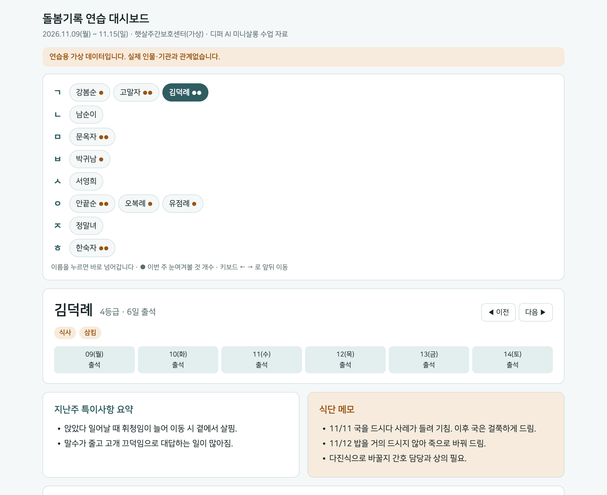

TONIGHT · 20:30 – 22:00
오늘의 90분
| 시각 | 순서 |
|---|---|
| 20:30 · 30분 | 인사이트 공유: 1주차 숙제 보기 |
| 21:00 · 15분 | 이번 주 이야기: 내려받는 길 · 엑셀 모양 · 화면이 답할 질문 |
| 21:15 · 30분 | 실습: 엑셀 → Supabase → 고객 한 분씩 보는 화면 |
| 21:45 · 15분 | 마무리: 화면 보여 주기 · 한 줄 회고 |
디퍼 AI 미니살롱 · 2주차 · 11.15
4 WEEKS · 매주 일요일 저녁
4주, 매주 하나씩
1주 · 11/8
기존 데이터 보는 창구 설계 (UI)
과제 · 흩어진 데이터 찾아서 입력

2주 · 11/15 (오늘)
기존 데이터 보는 창구 설계 (DB)
과제 · 나만의 페이지를 올리고 DB와 잇기

3주 · 11/22
잠그고 넣기 + 신청 폼 만들기

4주 · 11/29
대시보드로 첫 연락 취하기
지난주에 모아 온 데이터 위에서 오늘 이어 만듭니다.
디퍼 AI 미니살롱 · 2주차 · 11.15
THE 4 STEPS · 창구를 만드는 순서
1주차는 ①–②, 오늘은 ②–④

① · 1주차
흩어진 데이터 소재 파악
카톡 · 엑셀 · 밴드 · 종이
② · 1주차 → 2주차
UI 구상 및 제작
무엇이 중요한가
③ · 2주차
DB에 데이터 들여놓기
화면을 기준으로 표를 짭니다

④ · 2주차
UI와 DB 연결 확인
넣은 기록이 화면에 보이는지
1주차가 ①과 ②를 설명했다면, 오늘은 ②에서 ④까지 한 바퀴 돕니다.
디퍼 AI 미니살롱 · 2주차 · 11.15
INSIGHT SHARING · 30MIN
1주차 숙제 보기
1. 실습한 첫 화면을 클로드로 만들어 보기
2. 흩어진 데이터를 찾아 한 폴더에 모으기
오늘 실습의 재료입니다
3. Netlify · Supabase에 GitHub 계정으로 가입
완료
일부
못 함
안 해 옴
디퍼 AI 미니살롱 · 2주차 · 11.15
FROM WEEK 1
1주차에 본 화면을, 오늘 직접 만듭니다

1주차 화면 공유
린스쿨 운영 DB
학생 이름을 누르면 기본 정보, 수강 내역, 교사 코멘트가 한 화면에 모였습니다.

2주차 오늘
돌봄 기록 화면
어르신 이름을 누르면 지난주 특이사항, 식단 메모, 담당자가 한 화면에 모입니다.
사람 한 명 기준으로 모으기. 업종이 달라도 모양은 같습니다.
디퍼 AI 미니살롱 · 2주차 · 11.15 · 두 화면 모두 가상 데이터
THIS WEEK’S QUESTION
“케어포에서 어떻게
내려받아요?”
지난주에 나온 질문입니다. 직접 해 보니,
26명 기록을 사람이 손대지 않고 Claude가 다 내려받았습니다.
CAREFOR · 월간 기록지
케어포에서 내려받는 길
1
3. 요양급여제공 → 3-1. 요양급여 제공 기록
2
왼쪽 명단에서 어르신 한 분 선택
3
맨 아래 「월간 기록지 출력」
그달 보고서 창이 뜹니다
4
보고서 창 위쪽의 엑셀 아이콘
‘제공기록지(이름).xls’로 바로 저장
Claude에게 맡기면
내가 할 일은 크롬에서 로그인 하나.
2~4를 26명 반복하는 일은 Claude가 합니다. 10분 남짓.
한 번에 전원을 받는 버튼은 이 화면에 없습니다.
디퍼 AI 미니살롱 · 2주차 · 11.15
WHAT WE GOT
받은 엑셀은 ‘보고서 모양’입니다
엑셀 1개 = 어르신 1명
- 시트 6장: 주별 5장 + 별지 1장
- 날짜가 가로, 항목이 세로
- 칸이 합쳐져 있어 바로 DB에 못 넣음
Claude가 한 줄에 기록 하나로 폅니다
| 어르신 | 날짜 | 영역 | 내용 | 작성자 |
|---|---|---|---|---|
| 김덕례 | 11/11 | 신체활동 | 국을 드시다 사레… | 강민지 |
| 김덕례 | 11/12 | 신체활동 | 밥 대신 죽으로… | 오지현 |
| 한숙자 | 11/10 | 신체활동 | 깍두기 거부… | 강민지 |
예시는 연습용 가상 데이터
디퍼 AI 미니살롱 · 2주차 · 11.15
MY JOB · 무엇을 볼까
나는 어떤 데이터를 볼지,
핵심 기능이 될 데이터를 정합니다

1. 이분 지난주 어땠지?
특이사항 요약
2. 식사는 어땠지?
거부 · 남김 · 죽식 전환
3. 누가 썼지?
영역별 담당자
돌봄 기록이라면 이렇게. 볼 데이터를 정하면 표는 Claude가 짭니다.
디퍼 AI 미니살롱 · 2주차 · 11.15
TODAY’S SCREEN · 가상 데이터
인원을 한눈에! 가나다 이름표

1
가나다 이름표
ㄱ·ㄴ·ㅁ 줄마다 이름. 누르면 그분 화면으로
2
눈여겨볼 것
이름 옆 ● 개수, 주황 칩(식사·삼킴 등)
3
요약과 식단 메모
지난주 특이사항 2~3줄, 식사 거부·죽식 전환
디퍼 AI 미니살롱 · 2주차 · 11.15 · 햇살주간보호센터(가상) 12명
PRACTICE · 기록이 화면이 되기까지
내 기록이 화면에 닿는 길
기록
엑셀 · 워드 · 밴드 · 카톡 · 종이
화면
무엇을 볼지 정하고 먼저 그리기
DB
화면이 쓰는 모양대로 Supabase에

확인
새 기록 한 줄이 화면에 보이는지
기록의 형태는 달라도 길은 같습니다. 저장한 것이 화면에 다시 보이면 한 바퀴가 돈 것입니다.
디퍼 AI 미니살롱 · 2주차 · 11.15
PRACTICE · 이렇게 말하기
Claude Code에게 이렇게 말해 보세요
그대로 붙여 넣고 노란 부분만 바꾸기
[기록 폴더]에 돌봄 기록이 있어. 연습용 가짜 데이터야.
먼저 어르신 이름을 가나다순으로 누르면 지난주 특이사항 요약 · 식단 메모 · 담당자가
보이는 화면을 만들어 줘. 그다음 그 화면 기준으로 Supabase 표를 짜서 데이터를 넣어 줘.
나는 네가 준 SQL을 붙여 넣기만 할게.
다 되면 기록 한 줄을 넣어서 화면에 보이는지 확인하고 알려 줘.
노란 부분
내 폴더 이름, 내 화면이 답할 질문
끝 문장이 중요
“확인하고 알려 줘”가 있어야 Claude가 끝까지 돌려 봅니다
디퍼 AI 미니살롱 · 2주차 · 11.15
WRAP-UP · 15MIN
보여 주고, 한 줄 남기기
한 사람 1분: 내 화면에서 이름 하나 눌러 보이기
1
오늘 하려던 것은 ○○인데, ○○ 단계에서 멈췄다.
2
시간이 모자랐던 곳은 ○○이다.
3
아직 풀리지 않은 질문은 ○○이다.
디퍼 AI 미니살롱 · 2주차 · 11.15
HOMEWORK · 각자의 과제
2주차 숙제
수산나
만든 UI를 Netlify에 올리고, 실제 데이터를 Supabase에 올려서 연결하기
반딧불
요양 기록을 확인하는 나만의 페이지 화면 만들고 Netlify에 올리기
우아한여왕
밴드에 흩어진 고객 데이터를 모아, 무엇을 볼지 정하고 확인하는 나만의 페이지 화면 만들기
디퍼 AI 미니살롱 · 2주차 · 11.15 · 막히면 부록의 말하기 틀을 그대로 쓰세요
NEXT WEEK
11월 22일(일) 저녁 8:30
3주차 · 잠그고 넣기
+ 신청 폼 만들기
표를 잠근 뒤 실제 데이터를 넣고,
고객 기준으로 신청 폼을 만듭니다.
문의 · 디퍼 별지기 헤더
APPENDIX · 혼자 해 볼 때
Claude에게
이렇게 맡기세요
내가 할 일은 로그인, 버튼 몇 개, 눈으로 확인.
표 짜기·데이터 넣기·화면 만들기는 Claude가 합니다.
APPENDIX ① · 케어포
기록 내려받기
내가 하는 일
1. 크롬에서 케어포에 로그인
Claude in Chrome이 켜져 있어야 Claude가 크롬을 씁니다
2. 오른쪽 말을 Claude에게
3. 끝나면 폴더의 파일 수 확인
Claude에게 이렇게
크롬에 케어포 로그인해 뒀어. 3-1 요양급여 제공 기록에서 [11월] 월간 기록지를 [어르신 전원] 엑셀로 내려받아서 [carefor-11월] 폴더에 모아 줘. 다 받으면 몇 명 받았는지 알려 줘.
비밀번호는 내가 직접 입력합니다. 채팅에 쓰지 않습니다.
APPENDIX · Claude에게 맡기기 · 디퍼 AI 미니살롱 2주차
APPENDIX ② · 화면 먼저
무엇을 볼지 정하고 화면부터
내가 하는 일
1. 볼 데이터 세 가지 정하기
예: 지난주 특이사항 · 식단 메모 · 담당자
2. 오른쪽 말을 Claude에게
3. 열린 화면에서 이름 눌러 보기
4. 고칠 점을 말로
“식단 메모를 위로”, “이름을 더 크게”
Claude에게 이렇게
[carefor-11월] 폴더의 기록으로, 어르신 이름을 가나다순으로 누르면 [지난주 특이사항 요약 · 식단 메모 · 담당자]가 보이는 화면을 먼저 만들어 줘. DB는 아직 없어도 돼. 내 컴퓨터에서 열어 볼 수 있게 해 줘.
화면이 마음에 들 때까지 여기서 충분히 고칩니다. DB는 이 화면에 맞춰 다음 장에서 짭니다.
APPENDIX · Claude에게 맡기기 · 디퍼 AI 미니살롱 2주차
APPENDIX ④ · DB 넣고 잇기
화면에 맞춰 DB를 짜고 잇기
내가 하는 일
1. 오른쪽 말을 Claude에게
2. SQL Editor → New query → 받은 SQL 붙여 넣기 → Run
Success가 뜨면 “됐어”. 빨간 오류는 그 문장 그대로 Claude에게
3. Claude가 주소와 키를 물으면
Project Settings → API의 Project URL과 publishable(anon) 키만
Claude에게 이렇게
지금 만든 화면이 쓰는 데이터를 Supabase에 넣고, 화면이 Supabase에서 읽고 쓰게 연결해 줘. 표 설계와 넣는 순서는 화면 기준으로 네가 정해. 나는 붙여 넣기만 할 테니 SQL을 한 덩어리로 줘. 연습용 가짜 데이터라 누구나 읽고 쓸 수 있게 열어 둬. 다 되면 기록 한 줄을 넣어 화면에 보이는지 확인하고 알려 줘.
APPENDIX · Claude에게 맡기기 · CSV를 만들거나 표를 설계하지 않아도 됩니다 · secret 키는 주지 않습니다
APPENDIX ⑤ · NETLIFY
화면을 인터넷에 올리기
내가 하는 일
1. app.netlify.com/drop 열기
2. Claude가 알려 준 폴더를 끌어다 놓기
3. 생긴 주소를 열어 확인
주소 이름을 바꾸고 싶으면 그것도 Claude에게 “어디서 바꿔?”
Claude에게 이렇게
이 화면을 Netlify에 올릴 수 있게 폴더 하나로 준비해 줘. 비밀 키가 안 들어갔는지도 확인해 줘. 준비되면 어떤 폴더를 끌어다 놓으면 되는지 알려 줘.
Netlify 주소는 아는 사람 누구나 엽니다. 지금은 가상 데이터 화면만 올립니다.
APPENDIX · Claude에게 맡기기 · 디퍼 AI 미니살롱 2주차
APPENDIX ⑥ · 막힐 때
막히면 이 한 문장
화면에 [뜬 문장 그대로]가 떴어. 이게 무슨 뜻이고, 내가 뭘 누르면 돼?
채팅에 붙이지 않기
비밀번호 · 토큰 · secret 키
며칠 뒤 Supabase가 안 되면
무료 프로젝트가 쉬는 중. 대시보드에서 Restore
실제 기록은
3주차에 잠근 뒤에 넣습니다
APPENDIX · Claude에게 맡기기 · 디퍼 AI 미니살롱 2주차